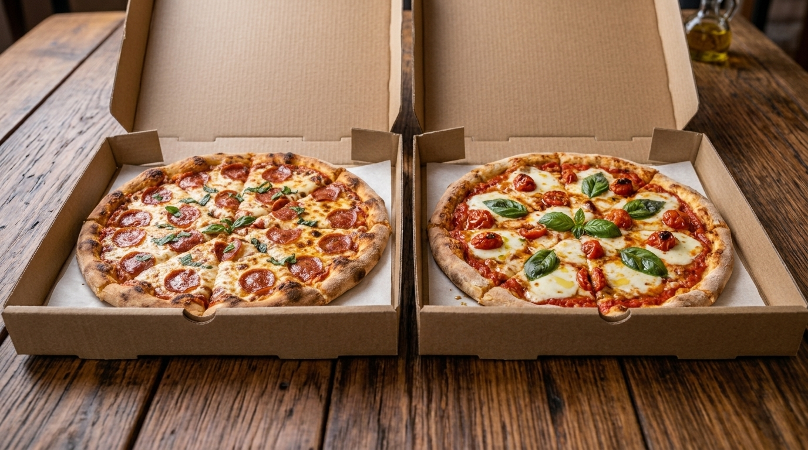
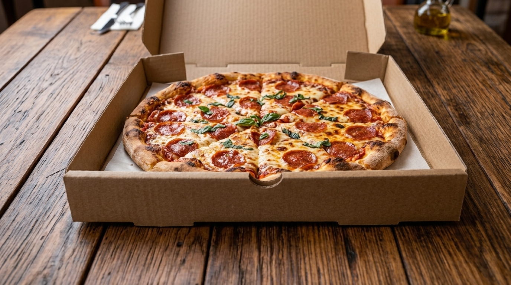

Origen de la pizza

Las Pizzas
Jose Alonso
Paucas
La pizza es uno de los platos más conocidos y demandados en el mundo hoy en día. Su aparición se remonta a miles de años atrás. Algunas personas dicen que su invención tuvo lugar en Grecia, otros en Egipto y otros que en el Norte de África. Así que quién inventó la pizza podría estar menos claro de lo que parece. Lo cierto es que existen diferentes versiones. La más certera es la que se refiere a esta invención hace más de 2.000 años en el sur de Italia. Entonces se consumía un tipo de pan plano recién horneado, una versión muy cercana de lo que es hoy este producto.

Está claro que sin la certeza de quién inventó la pizza, los italianos son sin duda los grandes maestros y el pueblo que la popularizó por todo el mundo, gracias a esta expansión, la pizza dejó de ser hace mucho tiempo un patrimonio italiano para convertirse en un patrimonio universal y más que un alimento es ya un ingrediente de la cultura social. Se asocia a diferentes eventos y existen restaurantes especializados con diferentes características en muchísimos países, si queremos indagar en quién inventó la pizza tendremos que remontarnos a principios del siglo XVI en Pompella y Nápoles. Fueron las primeras ciudades de Italia donde se encontraron algunos vestigios de alimentos similares a lo que se conoce hoy como la pizza.
Se deduce por ello que allí se consumía una especie de pan recién sacado del horno de un fogón de leña, se aderezaba con un poco de ajo, aceite de oliva, queso hecho con leche de búfala, romero y otras especias locales. Más parecido a la focaccia, la famosa pizza común es una masa de harina con levaduras que se cocina en un horno. Por eso, sus orígenes se remontan a la antigüedad en el Medio Oriente y puede que este sea el lugar en el que se inventó la pizza tal y como la conocemos hoy. En la antigua Babilonia, Egipto y los propios israelíes comían panes, pero sin levadura horneados en hornos de barro.